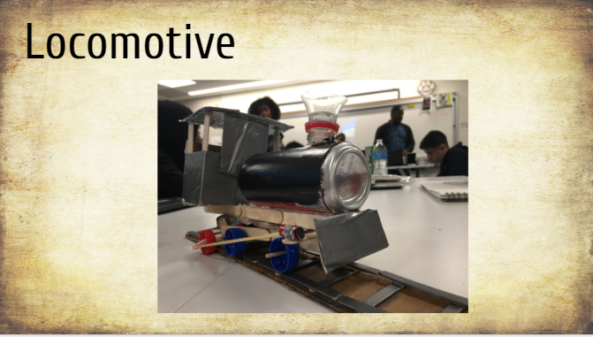

In a timely solution we learned about some of the most important inventions to come out of the victorian era technology boom,like
- Spinning Jenny
- Steam Engine
- Baking Powder
- Locomotive
- Sewing Machine
- Threshing Machine
- Cotton Gin
- Steelmaking
- Cement
- Gas Lighting
opening slide

sketch
3D Model